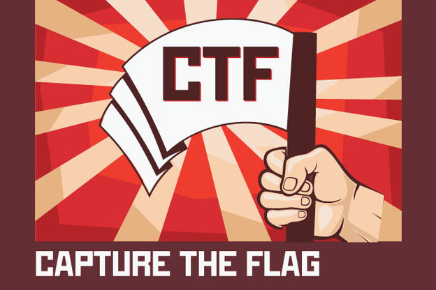

CTFとは？
Capture The Flag（旗取りゲーム）
情報セキュリティ技術を競う競技。ゲーム隠された答え（Flag）をセキュリティスキルを用いて探し、答えをサーバへ送信するクイズ形式が多い。
コンピュータセキュリティの分野におけるキャプチャー・ザ・フラッグ（CTF）は、コンピュータセキュリティ技術の競技である。
CTFは通常、参加者に対しコンピュータを守る経験に加え、現実の世界で発見されたサイバー攻撃への対処を学ぶ教育手法として企画されている。
「ハッカーコンテスト」「ハッキング大会」「ハッキング技術コンテスト」「ハッカー大会」などとも訳される。毎年ラスベガスで開催される世界最大規模のコンピュータセキュリティの会議DEFCON（英語版）において、当初余興としてCTFが始まった。
現在では毎年恒例の人気コンテンツと化している。
このDEFCONでのCTFでは、パケット分析、プロトコル解析、システム管理、プログラミング、暗号解読などの知識や技能が試される。
CTFには、主に攻防戦形式とクイズ形式の2つの形式がある。現在ではハッカーコンテストとしてのCTFは世界各地で開催されている。
日本では、2012年にホワイトハッカー育成を目的として、「CTFチャレンジジャパン 2012」が開催された。
なお、現時点では、DEFCONでのCTF決勝戦が世界最高峰の戦いであるとされており、世界中で行われるほとんどのCTFもそれに模した構成となっている。
コンピュータセキュリティの分野におけるキャプチャー・ザ・フラッグ（CTF）は、コンピュータセキュリティ技術の競技である。
CTFは通常、参加者に対しコンピュータを守る経験に加え、現実の世界で発見されたサイバー攻撃への対処を学ぶ教育手法として企画されている。
「ハッカーコンテスト」「ハッキング大会」「ハッキング技術コンテスト」「ハッカー大会」などとも訳される。毎年ラスベガスで開催される世界最大規模のコンピュータセキュリティの会議DEFCON（英語版）において、当初余興としてCTFが始まった。
現在では毎年恒例の人気コンテンツと化している。
このDEFCONでのCTFでは、パケット分析、プロトコル解析、システム管理、プログラミング、暗号解読などの知識や技能が試される。
CTFには、主に攻防戦形式とクイズ形式の2つの形式がある。現在ではハッカーコンテストとしてのCTFは世界各地で開催されている。
日本では、2012年にホワイトハッカー育成を目的として、「CTFチャレンジジャパン 2012」が開催された。
なお、現時点では、DEFCONでのCTF決勝戦が世界最高峰の戦いであるとされており、世界中で行われるほとんどのCTFもそれに模した構成となっている。